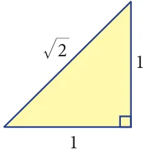
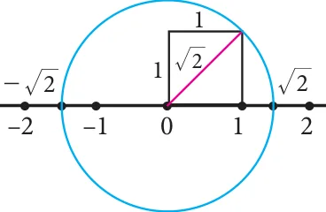
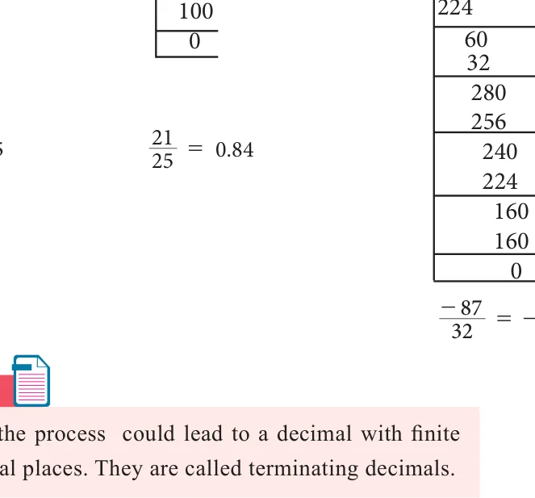
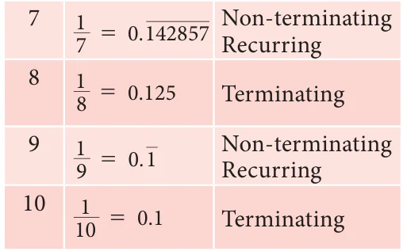
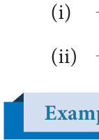
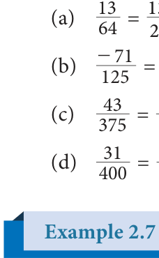

You know that each rational number is assigned to a point on the number line and learnt about the denseness property of the rational numbers. Does it mean that the line is entirely filled with the rational numbers and there are no more numbers on the number line? Let us explore.
Consider an isosceles right-angled triangle whose base and height
are each 1 unit long. Using Pythagoras theorem, the hypotenuse can
be seen having a length \(\sqrt{1^2 + 1^2} = \sqrt{2}\) (see Fig. 2.6). Greeks found that this \(\sqrt{2}\) is neither a whole number nor an ordinary fraction. The belief of relationship between points on the number line and all numbers was shattered! \(\sqrt{2}\) was called an irrational number.
An irrational number is a number that cannot be expressed as an ordinary ratio of two integers.
Examples GOLDEN RATIO (1:1.6)
- produce a number of examples Apart from 2 , one can The Golden Ratio has been heralded as the a b for such irrational numbers. most beautiful ratio in
- Here are a few: of a circle to the diameter of that \(\pi\) , the ratio of the circumference 5, 7, 2 3,f art and architecture.Take a line segment and divide it into two smaller segments such that the ratio of the whole line segment (a+ab+: baa) to segment \(+ = b a\) : b same circle, is another example a is the same as the ratio of segment a to the for an irrational number. segment b.
- e, also known as Euler's This gives the proportion \(\frac{a+b}{a} = \frac{a}{b}\) number, is another common Notice that 'a' is the geometric mean of a+b and b. irrational number.
- The golden ratio, also known as golden mean, or golden section, is a number often
stumbled upon when taking the ratios of distances in simple geometric figures such as the pentagon, the pentagram, decagon and dodecahedron, etc., it is an irrational number.
2.3.1 Irrational Numbers on the Number Line
Where are the points on the number line that correspond to the irrational numbers?
As an example, let us locate \(\sqrt{2}\) on the number line. This is easy.
Remember that \(\sqrt{2}\) is the length of the diagonal of the square whose side is 1 unit
(How?)Simply construct a square and transfer the length of one of its diagonals to our number line. (see Fig.2.7).

We draw a circle with centre at 0 on the number line,with a radius equal to that of diagonal of the square. This circle cuts the number line in two points, locating \(\sqrt{2}\) on the right of 0 and \(-\sqrt{2}\) on its left. (You wanted to locate \(\sqrt{2}\); you have also got a bonus in \(-\sqrt{2}\)

You started with Natural numbers and extended it to rational numbers and then irrational numbers. You may wonder if further extension on the number line waits for us. Fortunately it stops and you can learn about it in higher classes.
Representation of a Rational number as terminating and non-terminating decimal helps us to understand irrational numbers. Let us see the decimal expansion of rational numbers.
2.3.2 Decimal Representation of a Rational Number
If you have a rational number written as a fraction, you get the decimal representation by long division. Study the following examples where the remainder is always zero.
Consider the examples,

\(\frac{7}{8} = 0.875\)
\(\frac{21}{25} = 0.84\) and \(\frac{-87}{32} = -2.71875\)
Can the decimal representation of a rational number lead to forms of decimals that do not terminate? The following examples (with non-zero remainder) throw some light on this point.
Represent the following as decimal form (i) \(\frac{-4}{11}\) (ii) \(\frac{11}{75}\)

Solution
Thus we see that, \(\frac{-4}{11} = -0.\overline{36}\) and \(\frac{11}{75} = 0.1\overline{46}\).
A rational number can be expressed by

- either a terminating
- or a non-terminating and recurring
(repeating) decimal expansion.
The converse of this statement is also true. That is, if the decimal expansion of a number is terminating or non-terminating and recurring, then the number is a rational number.

2.3.3 Period of Decimal
In the decimal expansion of the rational numbers, the number of repeating decimals is
called the length of the period of decimals.
For example,

(i) \(\frac{25}{7} = 3.\overline{571428}\) has the length of the period of decimal = 6
\n(ii) \(\frac{27}{110} = 0.2\overline{45}\) has the length of the period of decimal = 2
Express the rational number \(\frac{1}{27}\) in recurring decimal form by using the recurring decimal expansion of \(\frac{1}{3}\). Hence write \(\frac{59}{27}\) in recurring decimal form.
Solution
We know that \(\frac{1}{3} = 0.\overline{3}\)
Therefore, \(\frac{1}{27} = \frac{1}{9} \times \frac{1}{3} = \frac{1}{9} \times 0.333\ldots = 0.037037\ldots = 0.\overline{037}\)
\nAlso, \(\frac{59}{27} = 2\frac{5}{27} = 2 + \frac{5}{27} = 2 + \left(5 \times \frac{1}{27}\right)\)
\(= 2 + (5 \times 0.\overline{037}) = 2 + (5 \times 0.037037037\ldots) = 2 + 0.185185\ldots = 2.185185\ldots = 2.\overline{185}\)
2.3.4 Conversion of Terminating Decimals into Rational Numbers
Let us now try to convert a terminating decimal, say 2.945 as rational number in the fraction form.
\(2.945 = 2 + 0.945\)
\(2.945 = 2 + \frac{9}{10} + \frac{4}{100} + \frac{5}{1000}\)
\(= 2 + \frac{900}{1000} + \frac{40}{1000} + \frac{5}{1000}\) (making denominators common)
\(= 2 + \frac{945}{1000}\)
\(= \frac{2945}{1000}\) or \(\frac{589}{200}\) which is required (In the above, is it possible to write directly \(2.945 = \frac{2945}{1000}\)?)
Convert the following decimal numbers in the form of \(\frac{p}{q}\), where \(p\) and \(q\) are integers and \(q \neq 0\): (i) 0.35 (ii) 2.176 (iii) \(-0.0028\)
Solution
- \(0.35 = \frac{35}{100} = \frac{7}{20}\)
- \(2.176 = \frac{2176}{1000} = \frac{272}{125}\)
- \(-0.0028 = \frac{-28}{10000} = \frac{-7}{2500}\)
2.3.5 Conversion of Non-terminating and recurring decimals into Rational Numbers
It was very easy to handle a terminating decimal. When we come across a decimal
such as 2.4, we get rid of the decimal point, by just divide it by 10. Thus \(2.4 = \frac{24}{10}\), which is simplified as \(\frac{12}{5}\). But, when we have a decimal such as \(2.\overline{4}\), the problem is that we have infinite number of 4s and hence will need infinite number of 0s in the denominator. For example,
\(2.4 = 2 + \frac{4}{10}\)
\(2.44 = 2 + \frac{4}{10} + \frac{4}{100}\) and \(2.444 = 2 + \frac{4}{10} + \frac{4}{100} + \frac{4}{1000}\)
How tough it is to have infinite 4's and work with them. We need to get rid of the infinite sequence in some way. The good thing about the infinite sequence is that even if we pull away one , two or more 4 out of it, the sequence still remains infinite.
Let \(x = 2.\overline{4}\) ...(1)
Then, \(10x = 24.\overline{4}\) ...(2) [When you multiply by 10, the decimal moves one place to the right but you still have infinite 4s left over). Subtract the first equation from the second to get,
\(9x = 24.\overline{4} - 2.\overline{4} = 22\) (Infinite 4s subtract out the infinite 4s and the left out is
\(24 - 2 = 22)\)
\(x = \frac{22}{9}\), the required value.
We use the same exact logic to convert any number with a non terminating repeating part into a fraction.

Convert the following decimal numbers in the form of
\(\frac{p}{q}\) \(p, q \in \mathbb{Z}\) and \(q \neq 0\).
- (i) \(0.\overline{3}\) (ii) \(2.\overline{124}\) (iii) \(0.4\overline{5}\) (iv) \(0.5\overline{68}\)
Solution
- Let \(x = 0.\overline{3} = 0.3333\ldots\) ...(1)
(Here period of decimal is 1, multiply equation (1) by 10)
\(10x = 3.3333\ldots\) ...(2). \((2) - (1)\): \(9x = 3\) or \(x = \frac{1}{3}\)
- Let \(x = 2.\overline{124} = 2.124124124\ldots\) ...(1)
(Here period of decimal is 3, multiply equation (1) by 1000.)
\(1000x = 2124.124124124\ldots\) ...(2). \((2) - (1)\): \(999x = 2122\), \(x = \frac{2122}{999}\)
- Let \(x = 0.4\overline{5} = 0.45555\ldots\) ...(1)
(Here the repeating decimal digit is 5, which is the second digit after the decimal point, multiply equation (1) by 10)
\(10x = 4.5555\ldots\) ...(2)
(Now period of decimal is 1, multiply equation (2) by 10)
\(100x = 45.5555\ldots\) ...(3). \((3) - (2)\): \(90x = 41\) or \(x = \frac{41}{90}\)
- Let \(x = 0.5\overline{68} = 0.5686868\ldots\) ...(1)
(Here the repeating decimal digit is 68, which is the second digit after the decimal point, so multiply equation (1) by 10)
\(10x = 5.686868\ldots\) ...(2)
(Now period of decimal is 2, multiply equation (2) by 100)
\(1000x = 568.686868\ldots\) ...(3). \((3) - (2)\): \(990x = 563\) or \(x = \frac{563}{990}\).
Note
To determine whether the decimal form of a rational number will terminate or non - terminate, we can make use of the following rule
If a rational number \(\frac{p}{q}\) , \(q \neq 0\) can be expressed in the form \(\frac{p}{2^m \times 5^n}\), where \(p \in \mathbb{Z}\) and \(m, n \in \mathbb{W}\), then rational number will have a terminating decimal expansion. Otherwise, the rational number will have a non- terminating and recurring decimal expansion
Example 2.6
Without actual division, classify the decimal expansion of the following numbers as terminating or non - terminating and recurring.
- (i) \(\frac{13}{64}\) (ii) \(\frac{-71}{125}\) (iii) \(\frac{43}{375}\) (iv) \(\frac{31}{400}\)
Solution

(a) \(\frac{13}{64} = \frac{13}{2^6}\), So \(\frac{13}{64}\) has a terminating decimal expansion.
\n(b) \(\frac{-71}{125} = \frac{-71}{5^3}\), So \(\frac{-71}{125}\) has a terminating decimal expansion.
\n(c) \(\frac{43}{375} = \frac{43}{3^1 \times 5^3}\), So \(\frac{43}{375}\) has a non-terminating recurring decimal expansion.
\n(d) \(\frac{31}{400} = \frac{31}{2^4 \times 5^2}\), So \(\frac{31}{400}\) has a terminating decimal expansion.
\(1 =\) 0.9999…
Verify that \(1 = 0.\overline{9}\).
Solution \(3.7 =\) 3.6999… Let \(x = 0.\overline{9} = 0.99999\ldots\) ...(1)
The pattern suggests that (Multiply equation (1) by 10) any terminating decimal \(10x = 9.99999\ldots\) ...(2) can be represented as a non- Subtract (1) from (2) terminating and recurring \(9x = 9\) or \(x =1\) decimal expansion with an endless block of 9's.
Thus, \(0.\overline{9} = 1\)